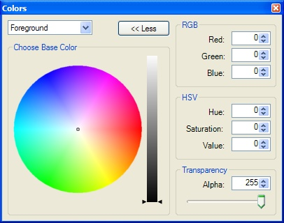
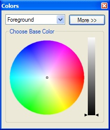

Colors Window
|  The Color Window will be automatically called whenever you click on the background and foreground color selector on the Tools Window. The user can select the color and the intensity by using the wheel and the bar. Also, the user can precisely describe the color they want, either in Red Green Blue or Hue Saturation Value, by entering values into the boxes ranging from 0 to 255 for RGB, 0 to 360 for Hue, or 0 to 100 for Saturation/Value. Finally, transparency of the color may also be set. The default value is 255 which is completely opaque, but the values can range anywhere between 0 (Completely transparent) and 255 (Opaque). Also, notice that the window
has two  This window is closeable and moveable. If it is not currently on the screen, you can display it using the menu bar option Window and clicking Colors. You can also use this combination to hide the Colors Window.
|